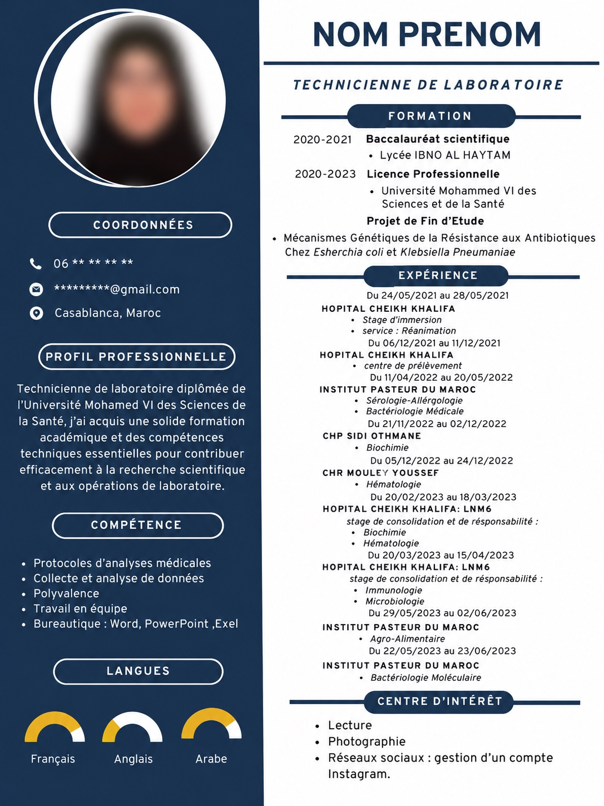
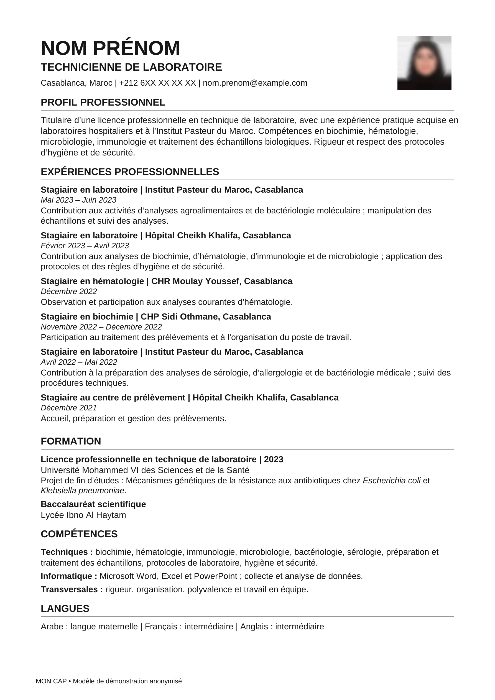

01 / DÉMARRER↗
CV Starter
Pour créer un CV clair et professionnel à partir de votre parcours.
- Structure adaptée à votre profil
- Présentation soignée
- Fichier prêt à relire
Tarif sur devis
Votre prochain cap commence ici
Que vous soyez débutant ou expérimenté, nous transformons votre parcours en un CV professionnel, stratégique et conçu pour vous démarquer.
À chaque parcours, une solution. À chaque ambition, un nouveau cap.
Avec MON CAP, trouvez votre cap.
Quelques réponses suffisent
Un mini-diagnostic vous aide à repérer le type d’accompagnement le plus adapté à votre prochaine étape.
Comparez le CV initial et sa version retravaillée par MON CAP.

Le parcours est là.

Une lecture plus claire.
Chaque candidature est adaptée à votre parcours et à vos objectifs.
Des CV conçus pour faciliter leur lecture par les recruteurs et les logiciels de recrutement.
Des candidatures adaptées à votre langue et à votre marché cible.
Des échanges personnalisés pour mieux comprendre vos ambitions.
Vos informations personnelles sont traitées avec discrétion.
Des ajustements selon les conditions de votre offre.
Sélectionnez l’offre adaptée à vos besoins.
Remplissez notre formulaire et partagez votre parcours, vos compétences et vos ambitions.
Nous travaillons sur vos documents selon votre objectif professionnel.
Validez votre candidature et bénéficiez des ajustements inclus dans votre pack.
Des formats selon votre besoin
Vous hésitez ? Le diagnostic vous aidera à préciser votre besoin avant de demander un devis.
Pour créer un CV clair et professionnel à partir de votre parcours.
Pour retravailler votre CV et mieux faire ressortir vos atouts.
Pour adapter votre candidature à un métier ou à une offre précise.
Une lettre personnalisée qui relie votre parcours aux besoins du poste.
Dossier Bewerbung · Un dossier de candidature clair et cohérent pour postuler en Allemagne.
BEWERBUNG READY? — by MON CAP
Évaluez gratuitement votre niveau de préparation et découvrez les éléments à optimiser pour votre candidature en Allemagne.
Le contenu du CV doit rester fidèle à votre parcours. MON CAP ne garantit pas l’obtention d’un entretien ou d’un emploi.
Français, arabe, anglais, allemand ou toute autre langue sur demande.
Votre parcours est unique, votre CV doit l’être aussi.
La clarté est déjà un premier pas vers votre prochain cap.
Avant de vous lancer
Vous ne trouvez pas votre réponse ? Préparez votre demande, on vous guidera vers la bonne formule.
Oui. Votre CV peut présenter votre formation, vos stages, vos projets, vos compétences et vos activités pertinentes, si ces éléments correspondent à votre situation.
Le CV Plus porte sur l’amélioration globale de votre document. Le CV Ciblé prend aussi en compte un métier ou une offre précise pour sélectionner et organiser les informations les plus pertinentes.
Non. Aucun CV ne peut garantir un recrutement. L’accompagnement vise à rendre votre parcours plus clair et votre candidature plus cohérente avec votre objectif.
Choisissez une formule et envoyez les informations de base dans le formulaire. Votre demande sera préparée pour que vous puissiez la transmettre à MON CAP.
Votre demande MON CAP
Remplissez le formulaire, puis envoyez votre demande directement sur WhatsApp.